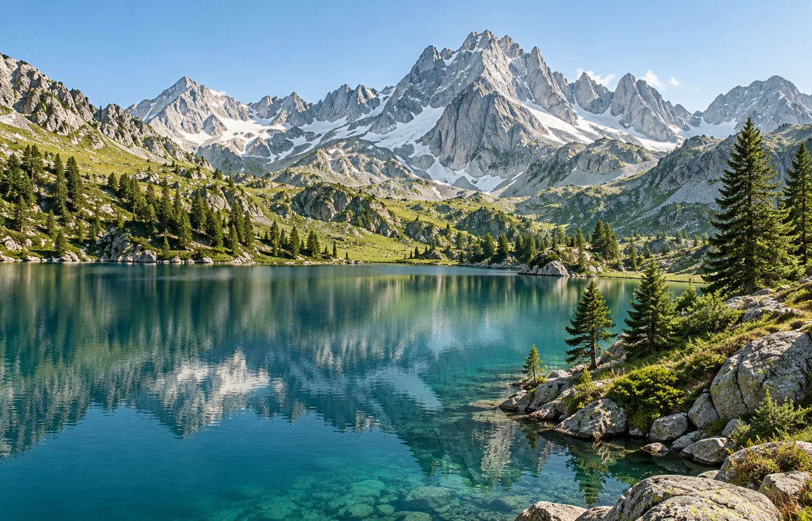

01
Prepara
Il prossimo sentiero comincia con un’idea.
- Crea un itinerario e aggiungi le tue tappe
- Importa tracce GPX e KML
- Esplora il terreno in 3D e salva la mappa per dopo
MENO SCHERMO, PIÙ CAMMINO
Scegli una meta, segui la tua traccia e porta a casa un nuovo ricordo. Traccialto ti accompagna, un passo alla volta.
Scopri TraccialtoGratis · Senza account · Senza pubblicità

DAL DESIDERIO DI PARTIRE AL RICORDO
Le cose che servono prima, durante e dopo un’uscita. Senza complicazioni.
Il prossimo sentiero comincia con un’idea.
Segui un percorso. Oppure lasciati guidare dalla curiosità.
Ogni uscita ha qualcosa da raccontare.
GUARDA OLTRE LA LINEA
Ruota il percorso, osserva i rilievi e consulta il profilo altimetrico. Un modo più immediato per conoscere il terreno che ti aspetta.
Quote e cartografia sono stime. Dettaglio e copertura dipendono dalla zona e dalle fonti disponibili.
I TUOI CAMMINI, LE TUE SCELTE
Le registrazioni e il diario sono conservati sul telefono. Nessuna pubblicazione automatica: scegli tu cosa condividere e con chi.
Mappe online, ricerca e calcolo dei percorsi contattano fornitori esterni per ottenere i dati necessari.
Come vengono trattati i datiPRIMA DI METTERTI IN CAMMINO
Il progetto è pensato per essere distribuito gratuitamente, senza pubblicità e senza account obbligatorio.
Puoi registrare con il GPS e consultare le tracce e le mappe già scaricate. La ricerca dei luoghi, il calcolo dei percorsi e il caricamento di nuove mappe richiedono una connessione. Prepara il necessario prima di partire.
Sì, puoi importare file GPX e KML ed esportare i tuoi percorsi negli stessi formati. Usa tracce che hai il diritto di utilizzare e condividere.
L’app è per Android. I file HTML condivisi possono essere consultati anche su iPhone, con una vista statica del percorso e il profilo altimetrico; su browser compatibili è disponibile anche la vista interattiva.
CI VEDIAMO SUL SENTIERO
Traccialto per Android. Il collegamento al download sarà disponibile qui dopo la pubblicazione.
In preparazione per Google PlayHai una domanda? Scrivici